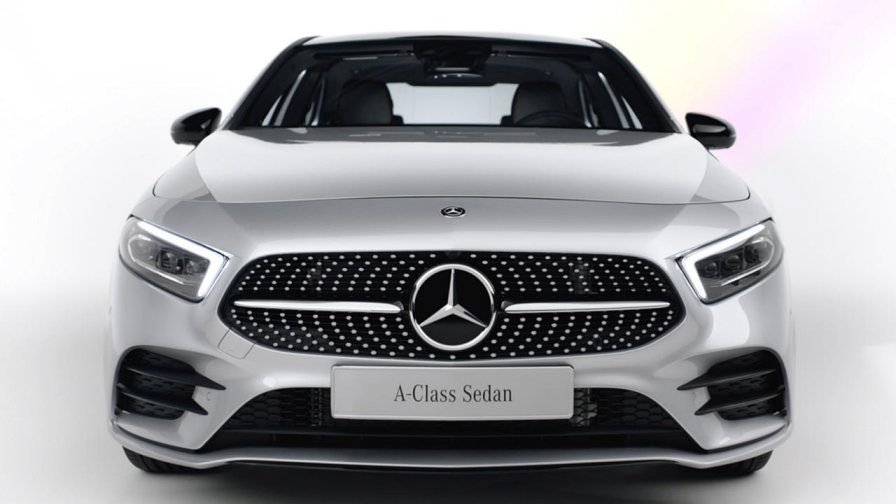

Mercedes-Benz Design: Sensual Purity and Modern Luxury.
The designers at Mercedes-Benz are reconciling tradition and modernity in designing the cars for the future. Their work centres on “Sensual Purity” as an expression of modern luxury. The new design idiom featuring reduced edges and creases – indentations and recesses in the sheet metal – aims to create clear forms and sensual surfaces which showcase high tech while also arousing emotions. Design creates something out of the ordinary and makes a major contribution to shaping the brand image. For Mercedes-Benz designers, good design has to be both beautiful and intelligent.
A-Class Saloon: The design

The new A-Class Saloon’s minimalist design with an independent rear
end with striking two-part tail lights, the revolutionary MBUX
(Mercedes-Benz User Experience) is another highlight. It may not
take the wheel, but it does make driving as comfortable as possible.
Thanks to artificial intelligence, the system is capable of learning
and, over time, gets better acquainted with the driver. With the
intelligent LINGUATRONIC voice control system, you can talk almost
as naturally as you would with a good friend.Even at first glance,
the new Mercedes-Benz A-Class draws the eye with its
athletic-emotional design. YouTube pro MrJWW demonstrates how the
car’s side catwalk line, broad shoulders and extended wheelbase
shape the sleek design. His favourite detail? The iconic star
grille. What’s yours?The purist, surface-accentuating design of the
new A-Class is the next step in the Mercedes-Benz design philosophy
of Sensual Purity. On the basis of a compact two-box design,
optimised dimensions and proportions have led to a new
interpretation of the A-Class’s design.
A 200: Kraftstoffverbrauch kombiniert: 5,6–5,2 l/100 km;
CO₂-Emissionen kombiniert: 128–120 g/km.1